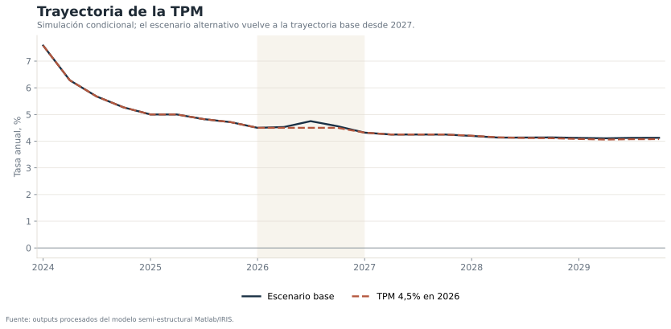
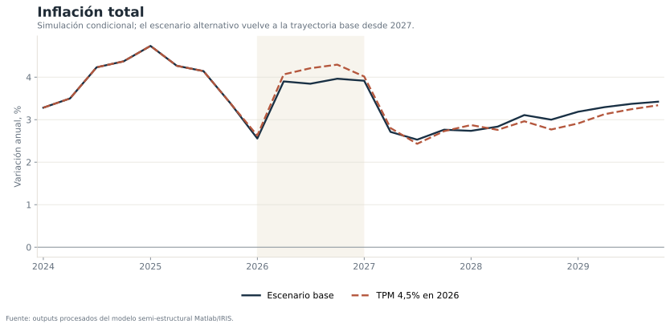
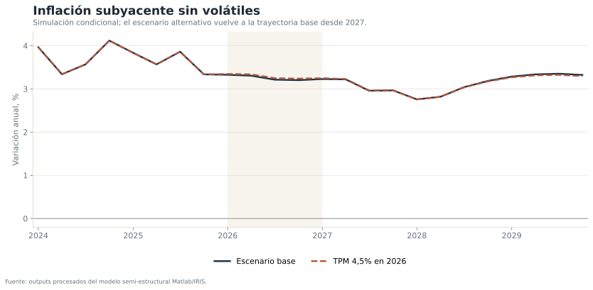
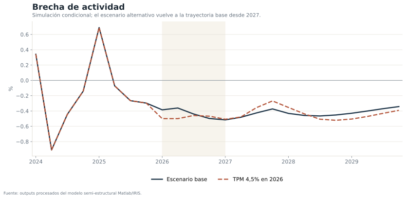

Pregunta económica
¿Cómo cambian la inflación y la brecha de actividad cuando la TPM se mantiene en 4,5% durante 2026, en lugar de seguir la trayectoria del escenario base identificado, y luego retorna al escenario base desde 2027?
El valor del ejercicio está en la coherencia conjunta: una trayectoria de tasa no se evalúa de manera aislada, sino junto con las ecuaciones de demanda, inflación, expectativas, tipo de cambio real y condiciones externas.
Escenarios comparados
- Escenario base IPoM identificado: reproduce una trayectoria de referencia consistente con el modelo y los supuestos externos incorporados.
- TPM 4,5% durante 2026: exogeniza la tasa durante cuatro trimestres y fuerza el retorno a la trayectoria base a partir de 2027T1.
Resultados principales




El escenario alternativo genera una diferencia máxima de inflación total cercana a 0,36 puntos porcentuales. La magnitud es moderada porque la desviación de la TPM es temporal y el ejercicio obliga a regresar al escenario base desde 2027.
Estructura conceptual
La implementación en IRIS distingue variables endógenas, shocks y condiciones de escenario. La trayectoria alternativa de TPM se trata como una condición sobre el modelo, no como un cambio arbitrario de una columna de datos.
Bloque externo y supuestos
El modelo incorpora crecimiento de socios comerciales, Federal Funds Rate, Treasury a 10 años, VIX, cobre, petróleo y tipo de cambio real. Los escenarios comparten el mismo bloque externo salvo cuando se evalúa una alternativa específica de petróleo o brecha.
La comparación principal mantiene constantes esos supuestos para aislar el efecto de la condición monetaria.
Límites de interpretación
- Los resultados dependen de la calibración y de la identificación del escenario base.
- Una trayectoria condicional no incorpora todas las respuestas de expectativas o primas de riesgo que podrían observarse en la práctica.
- La magnitud de las diferencias no debe leerse como una estimación causal estructural definitiva.
- El retorno exógeno al escenario base desde 2027 reduce deliberadamente la persistencia de los efectos.